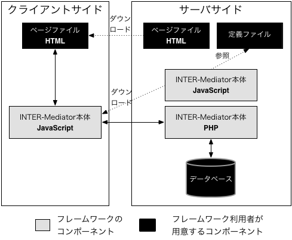

INTER-Mediator Lab. - Room 1
INTER-Mediator Lab. - Room 1
3. Webアプリケーションの概略
Webアプリケーションの基本的な構成
データベースを利用したWebページを作成するとき、状況に応じてデータを取得して、その結果をHTMLとして生成し、それをクライアントに送るという作業を行う必要があります。HTML/CSS/JavaScriptだけではその仕組みは完全にはできないため、サーバ側で何らかの処理をさせる仕組みが必要になります。そうした仕組みを一般に「Webアプリケーション」と呼びますが、用語の示す範囲はややあいまいです。ここでは、Webサーバとデータベース以外に、目的に応じたソフトウエアを追加しないといけないということが重要です。
つまり、ニュースサイトとコマースサイトでは要求が異なるため、単一の追加ソフトウエアではまかなえません。要求に応じたソフトウエアを、サイトごとに作る必要があります。そのための仕組みの基本がCGIであり、Webサーバは単にファイルの内容を返すだけでなく、何らかの処理を行ってその結果を返すとか、クライアントのフォームで入力した結果を受け取ってなんらかの処理をするという仕組みを持っています。その処理を行うソフトウエアははさまざまな手法で構築されていますが、最近ではPHPやJavaなど、さまざまな実行環境や言語が利用されています。多くのソフトウエアは、プログラミング言語を用いて開発されているのが実情です。そのため、Webアプリケーション開発は、プログラミングやシステム開発を行うような会社や人材がまかなう業務となっています。
Webアプリケーションが複雑化するにともない、プログラミングを1から行うようなことは少なくなり、現在はほとんどの開発を「フレームワーク」と呼ばれる一定の共通的な機能をまかなうソフトウエアをベースに作られます。有名なフレームワークとしては、CakePHPやRuby on Railsがあります。
INTER-Mediatorの動作上の構成
今回ご利用していただくINTER-Mediatorは、このフレームワークに属するものです。データベースがあり、Webサーバある状態で、データベースを利用したWebアプリケーションを開発するための素材です。しかしながら、INTER-Mediatorは他のフレームワークと大きく異なり、プログラミング言語でのプログラム作成をしなくても、機能を作り込めるようにしています。どのようにすればいいのかは次のページ以降、詳細に説明しますが、概ね、HTML内に記述を加えることと、データベースの利用に関するルールを列挙することと思っていてください。
Webアプリケーションでは複雑な動作を目にすることも一般的です。たとえば、Amazonのサイトは、莫大なユーザの購入履歴を覚えていたり、流通と連動して分割送信するなどたくさんの機能からなっています。しかしながら、複雑なページでも、その根本は、データベースから取り出したデータを表示し、一方で、入力したデータを書き込むといった作業が基本です。そうした処理を、極力少ない作業で実現しようとしたのがINTER-Mediatorです。
もちろん、Amazonのようなサイトを簡単に作れるかというとそれは無理です。しかしながら、Webアプリケーションを作るニーズは至る所にあり、その多くの場面では比較的シンプルな動作で十分なこともよくあります。Excelに記録するような業務で、一方でその情報を共有したいようなもの、たとえば小さな会社での資産管理などでは、Excelワークシートを添付メールで社員全員に送る事よりも、Webアプリケーションにする方が、即時に情報が見えるなど数多くのメリットがありますし、貸出や予約といった仕組みも有効に機能するでしょう。そうしたアプリケーションを、少ない労力で開発し、可能であれば現場の利用者がメンテナンスできるような状況を、INTER-Mediatorというフレームワークで作り出そうとしています。
INTER-Mediatorで作るべきもの
ここで想定しているWebアプリケーション開発は、すでにデータベースが作られた状態であるということです。その状態から、HTMLファイルなどのページ素材を作ると同時に、「定義ファイル」と呼ばれるデータベースの利用に関するルールなどを列挙したファイルを作り、Webアプリケーションとしての動作を行うようにします。
この定義ファイルの定義をベースにして、データベースからデータを取り出してページの中に埋め込むような動作をするのが、フレームワークとしてのINTER-Mediatorの重要な仕組みの1つです。HTMLで記述したタグ要素の中の特定の属性に、データベースのどのテーブルのどのフィールドと連動させるかといった記述を追加します。INTER-Mediator向けの記述を追加したHTMLファイルを「ページファイル」と呼びます。
これら、定義ファイルとページファイルを作る事で、INTER-Mediatorは機能します。いずれのファイルもサーバに保存しますが、多くの部分がJavaScriptで稼働しており、データベースから取り出したデータをページに埋め込む作業はクライアントのWebブラウザ内で行います。
学習時間調査
読み終わったとき、以下のラジオボタンのいずれかを選択して、「読み終わった」ボタンをクリックしてください。
開いてから今まで、このページを、
あまり時間をかけて読んではいなかった
他のことと半々くらいの時間をかけて読んだ
多くの時間をかけて読んだ
ほとんどの時間を読む事に使った
このページの内容について、自分が感じる理解度は、
少しは分かったが半分以下しか分からなかった
半々くらい
すべては理解できないが半分以上は理解した
ほとんど理解できた
←クリックすると、次のページに移動します。